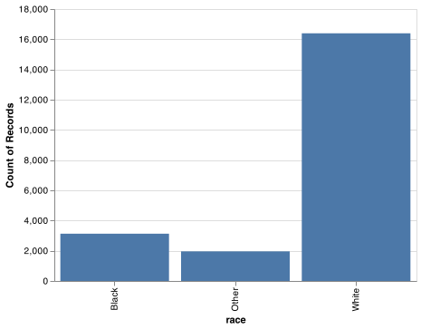
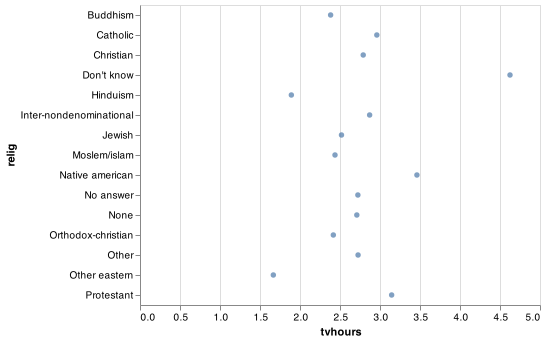
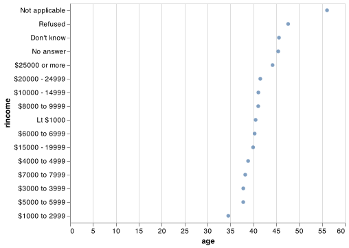

15 Factors
15.1 Introduction
In pandas, categorical variables (factors in R) are variables that have a fixed and known set of possible values. They are also useful when you want to display character vectors in a non-alphabetical order. You can read the pandas documentation.
15.1.1 Prerequisites
To work with categorical variables, we’ll use the category data type in pandas. It supports tools for dealing with categorical variables using a wide range of helper methods.
15.2 Creating categories
Imagine that you have a variable that records month:
Using a string to record this variable has two problems:
There are only twelve possible months, and there’s nothing saving you from typos:
It doesn’t sort in a useful way:
You can fix both of these problems with a factor. To create a factor you must start by creating a list of the valid levels:
month_levels = pd.Series([
"Jan", "Feb", "Mar", "Apr", "May", "Jun",
"Jul", "Aug", "Sep", "Oct", "Nov", "Dec"
])Now you can create a factor:
y1 = pd.Categorical(x1, categories=month_levels)
y1
#> [Dec, Apr, Jan, Mar]
#> Categories (12, object): [Jan, Feb, Mar, Apr, ..., Sep, Oct, Nov, Dec]
y1.sort_values()
#> [Jan, Mar, Apr, Dec]
#> Categories (12, object): [Jan, Feb, Mar, Apr, ..., Sep, Oct, Nov, Dec]And any values not in the set will be silently converted to nan:
y2 = pd.Categorical(x2, categories=month_levels)
y2
#> [Dec, Apr, NaN, Mar]
#> Categories (12, object): [Jan, Feb, Mar, Apr, ..., Sep, Oct, Nov, Dec]Sometimes you’d prefer that the order of the levels match the order of the first appearance in the data. You can do that when creating the factor by setting levels to pd.unique(x):
f1 = pd.Categorical(x1, categories=pd.unique(x1))
f1
#> [Dec, Apr, Jan, Mar]
#> Categories (4, object): [Dec, Apr, Jan, Mar]If you ever need to access the set of valid levels directly, you can do so with levels():
15.3 General Social Survey
For the rest of this chapter, we’re going to focus on gss_cat data found in the forcats R package. It’s a sample of data from the General Social Survey, which is a long-running US survey conducted by the independent research organization NORC at the University of Chicago. The survey has thousands of questions, so in gss_cat I’ve selected a handful that will illustrate some common challenges you’ll encounter when working with factors.
gss_cat = pd.read_csv("https://github.com/byuidatascience/data4python4ds/raw/master/data-raw/gss_cat/gss_cat.csv")
marital_levels = ["No answer", "Never married", "Separated", "Divorced", "Widowed", "Married"]
race_levels = ["Other", "Black", "White", "Not applicable"]
income_levels = ["No answer", "Don't know", "Refused", "$25000 or more", "$20000 - 24999",
"$15000 - 19999", "$10000 - 14999", "$8000 to 9999", "$7000 to 7999", "$6000 to 6999",
"$5000 to 5999", "$4000 to 4999", "$3000 to 3999", "$1000 to 2999", "Lt $1000", "Not applicable"]
party_levels = ["No answer", "Don't know", "Other party", "Strong republican", "Not str republican",
"Ind,near rep", "Independent", "Ind,near dem", "Not str democrat", "Strong democrat"]
religion_levels = ["No answer", "Don't know", "Inter-nondenominational", "Native american", "Christian",
"Orthodox-christian", "Moslem/islam", "Other eastern", "Hinduism", "Buddhism", "Other", "None", "Jewish",
"Catholic", "Protestant", "Not applicable"]
denom_levels = ["No answer", "Don't know", "No denomination", "Other", "Episcopal", "Presbyterian-dk wh",
"Presbyterian, merged", "Other presbyterian", "United pres ch in us", "Presbyterian c in us",
"Lutheran-dk which", "Evangelical luth", "Other lutheran", "Wi evan luth synod", "Lutheran-mo synod",
"Luth ch in america", "Am lutheran", "Methodist-dk which", "Other methodist", "United methodist",
"Afr meth ep zion", "Afr meth episcopal", "Baptist-dk which", "Other baptists", "Southern baptist",
"Nat bapt conv usa", "Nat bapt conv of am", "Am bapt ch in usa", "Am baptist asso", "Not applicable"]
gss_cat = gss_cat.assign(
marital = lambda x: pd.Categorical(x.marital, categories=marital_levels),
race = lambda x: pd.Categorical(x.race, categories=race_levels),
rincome = lambda x: pd.Categorical(x.rincome, categories=income_levels),
partyid = lambda x: pd.Categorical(x.partyid, categories=party_levels),
relig = lambda x: pd.Categorical(x.relig, categories=religion_levels),
denom = lambda x: pd.Categorical(x.denom, categories=denom_levels),
)(You can get more information about the variables using the data description sheet in data4python4ds.)
When factors are stored in a tibble, you can’t see their levels so easily. One way to see them is with value_counts() or you can get a high level summary with describe():
gss_cat.race.value_counts()
#> White 16395
#> Black 3129
#> Other 1959
#> Not applicable 0
#> Name: race, dtype: int64
gss_cat.race.describe()
#> count 21483
#> unique 3
#> top White
#> freq 16395
#> Name: race, dtype: objectOr with a bar chart:
chart = (alt.Chart(gss_cat).
encode(alt.X('race'), alt.Y('count()')).
mark_bar().
properties(width = 400))
chart.save("screenshots/altair_cat_1.png")
By default, ggplot2 will drop levels that don’t have any values. You can force them to display with:
levels_use = gss_cat.race.cat.categories.to_list()
chart = (alt.Chart(gss_cat).
encode(
x = alt.X('race', scale = alt.Scale(domain = levels_use)),
y = alt.Y('count()')).
mark_bar().
properties(width = 400))
chart.save("screenshots/altair_cat_2.png")
These levels represent valid values that simply did not occur in this dataset. When working with factors, the two most common operations are changing the order of the levels, and changing the values of the levels. Those operations are described in the sections below.
15.3.1 Exercise
Explore the distribution of
rincome(reported income). What makes the default bar chart hard to understand? How could you improve the plot?What is the most common
religin this survey? What’s the most commonpartyid?Which
religdoesdenom(denomination) apply to? How can you find out with a table? How can you find out with a visualisation?
15.4 Modifying factor order
It’s often useful to change the order of the factor levels in a visualisation. For example, imagine you want to explore the average number of hours spent watching TV per day across religions:
relig_summary = gss_cat.groupby('relig').agg(
age = ('age', np.mean),
tvhours = ('tvhours', np.mean),
n = ('tvhours', 'size')
).reset_index()
chart = (alt.Chart(relig_summary).
encode(alt.X('tvhours'), alt.Y('relig')).
mark_circle())
chart.save("screenshots/altair_cat_3.png")
It is difficult to interpret this plot because there’s no overall pattern. We can improve it by reordering the levels of relig using the sort argument in alt.Y(). The sort argument uses -x to sort largest at the top and x to sort with the largest at the bottom of the y-axis. If you would like to implement more intricate sortings using alt.EncodingSortField() with the following arguments.
field, the column to use for the sorting.op, the function you would like to use for the sort.- Optionally,
order, allows you to take the values from theopargument function and sort them as'descending'or'ascending'.
Thus, if we were going to implement more detailed sorting we would use
alt.EncodingSortField(field = 'tvhours', op = 'sum', order = 'ascending')). Note that sorting within Altair for boxplots is not very functional. You would need to use pd.Categorical() to put the categories in your prefered order.
chart = (alt.Chart(relig_summary).
encode(alt.X('tvhours'), alt.Y('relig')).
mark_circle())
chart.save("screenshots/altair_cat_4.png")
Reordering religion makes it much easier to see that people in the “Don’t know” category watch much more TV, and Hinduism & Other Eastern religions watch much less.
As you start making more complicated transformations, I’d recommend moving them out of Altair and into a new variable using pandas.
chart = (alt.Chart(relig_summary).
encode(alt.X('tvhours'), alt.Y('relig', sort = '-x')).
mark_circle())As you start making more complicated transformations, I’d recommend moving them out of Altair and into a new variable using pandas. What if we create a similar plot looking at how average age varies across reported income level?
rincome_summary = gss_cat.groupby('rincome').agg(
age = ('age', np.mean),
tvhours = ('tvhours', np.mean),
n = ('tvhours', 'size')
).reset_index()
chart = (alt.Chart(rincome_summary).
encode(alt.X('age'), alt.Y('rincome', sort = '-x')).
mark_circle())
chart.save("screenshots/altair_cat_5.png")
Here, arbitrarily reordering the levels isn’t a good idea! That’s because rincome already has a principled order that we shouldn’t mess with. Reserve sorting for factors whose levels are arbitrarily ordered.
Why do you think the average age for “Not applicable” is so high?
15.4.1 Exercises
There are some suspiciously high numbers in
tvhours. Is the mean a good summary?For each factor in
gss_catidentify whether the order of the levels is arbitrary or principled.
15.5 Modifying factor levels
The pandas categorical methods for editing the categories are done using three primary methods:
rename_categories(): simply pass a list of the new names.add_categories(): new list names are appended.remove_categories(): Values which are removed are replaced withnp.nan.remove_unused_categories(): Drops categories with no values.
You can read more about categories within pandas with the categorical data documentation.
15.5.1 Exercises
How have the proportions of people identifying as Democrat, Republican, and Independent changed over time?
How could you collapse
rincomeinto a small set of categories?